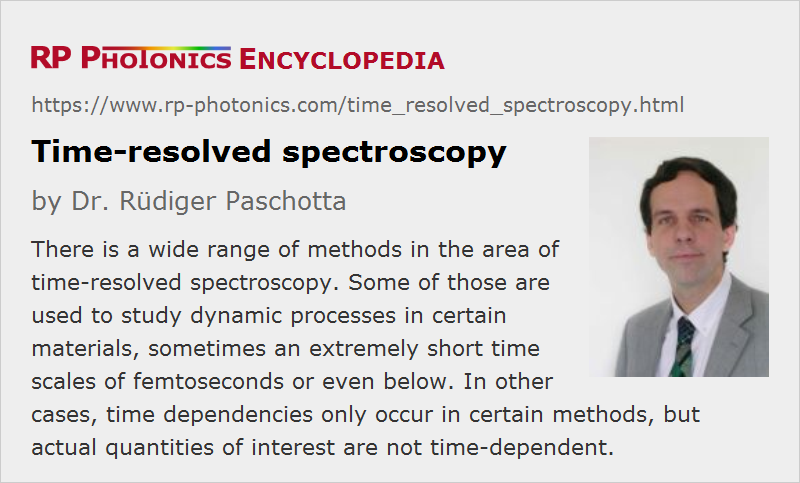

Time-resolved Spectroscopy
Definition: spectroscopy where time-dependent signals are measured
Alternative term: ultrafast spectroscopy
German: zeitaufgelöste Spektroskopie
Categories: optical metrology, methods
How to cite the article; suggest additional literature
Author: Dr. Rüdiger Paschotta
Time-resolved spectroscopy (also called ultrafast spectroscopy) includes a wide range of spectroscopic methods which involve the measurement of time-dependent signals. Partly, the actual purpose is to study dynamic processes in certain materials on times scales between seconds and femtoseconds, or sometimes even shorter. In other cases, time dependencies only occur as part of a measurement method, while the actual quantities of interest are not time-dependent. Various example cases are discussed in the following sections.
Some methods of time-resolved spectroscopy are quite demanding in terms of required laser sources. For example, one may require a tunable picosecond of femtosecond laser, the process of which are synchronized with pump pulses at a different wavelength. In most cases, two or more pulses at different wavelengths are derived from a single mode-locked laser instead of using independent sources which need to be synchronized.
Transient Absorption Spectroscopy
This method is based on the principle of pump–probe measurements, then also called pump–probe spectroscopy. Here, a sample is excited with a pump pulse, followed by a probe pulse with a variable time delay, adjusted through some kind of variable optical delay line. The dependence of the measured absorbance or transmittance of the sample on the mentioned time delay gives information on the temporal evolution of the system after excitation. For example, the probe pulses may monitor the population of the ground state, which is reduced by the excitation but recovers subsequently. There are also cases where the probe pulses cause excited-state absorption, and fluorescence from higher energy levels populated that way is detected; one may thus measure how excited-state populations evolve.
Notably, the time resolution for such methods is not limited by the bandwidth of the used photodetectors, but rather by the pulse duration. Short pulse durations are required for high temporal measurement resolution, but at the same time limit the spectral resolution.
Spectrally resolved information can be obtained in different ways. One possibility is to use broadband probe pulses and analyze their spectra e.g. with a spectrograph. Alternatively, one may do the measurements with a variable wavelength of the probe pulses. This is possible, for example, when the probe pulses are generated with an optical parametric oscillator, which is pumped with the same laser which produces the pump pulses going to the sample.
Pump and probe pulses may be in different spectral regions, e.g. the ultraviolet, visible or infrared region.
Fluorescence Decay Measurements
The decay of fluorescence light following an excitation pulse, indicating the lifetime of an excited energy level, can be directly measured with a photodiode if it occurs on a long enough time scales. For example, upper-state lifetimes of solid-state laser gain media are normally in the microsecond or millisecond region and can easily be measured with such methods.
For the measurement of faster decay processes, e.g. on picosecond or femtosecond timescales, different methods are required, because sufficiently fast photodetectors are not available. This is again a case for pump–probe techniques as explained above under transient absorption spectroscopy.
Coherent Time-resolved Methods
There are various methods of coherent time-resolved spectroscopic methods, where phase values are relevant in some way.
An example is quantum beat spectroscopy, where multiple excited levels of some system are coherently excited with a short laser pulse. This is possible if the bandwidth of the pulse covers more than one optical transition to an excited state. The coherence of the excitation leads to quantum beats in the fluorescent emission. Fourier transformation of the beat signal can reveal the precise beat frequencies, which are related to differences of excitation energies. This method can be used, for example, for studying molecular wave-packet dynamics.
In a modified method, one produces photon echoes. Here, an initial excitation pulse is a π/2 pulse, leading to a coherent superposition of ground state and excited state. After some variable time delay, one sends a π pulse, having twice the pulse energy, which effectively reverses the temporal evolution of quantum-mechanical excitation phases and produces a photon echo. The measured intensity of the photon echo carries information on dephasing processes, which can be the object of investigation.
Attosecond Pulse Spectroscopy
Attosecond pulses, having durations well below one femtosecond, can be obtained with methods of high harmonic generation. Obviously, they have the potential for measurements with extremely high temporal resolution. For example, one may even probe optical oscillations on femtosecond time scales.
Attosecond pulses are used in conjunction with different spectroscopic methods. One example is transient absorption spectroscopy as explained above. The probe pulse may be an attosecond pulse, or even the pump and probe pulse.
Other methods are based on attosecond electron spectroscopy, i.e., the analysis of photoelectron energies in combination with attosecond streaking. Here, an attosecond pulse generates photoelectrons on a sample, which at the same time is exposed to phase-stabilized and temporally synchronized near-infrared laser pulses. Depending on the time of photoelectron generation within the oscillation cycle of the infrared light, different energies of detected photoelectrons are obtained. Such methods have originally been developed for the characterization of attosecond pulses, but are now also used for spectroscopic purposes.
Terahertz Spectroscopy
Some of the methods in terahertz spectroscopy are time-resolved methods. For example, terahertz waveforms can be recorded with optical sampling techniques. By comparing waveforms after some propagation with and without a sample in the beam path, one obtain terahertz absorption spectra. This method is called terahertz time domain spectroscopy.
Cavity Ring-down Spectroscopy
For measuring very weak absorption, methods of cavity ring-down spectroscopy have been developed. The basic principle is that the decay time of light in an optical resonator is reduced if some absorption occurs in a gas within the resonator. By comparing the decay time with and without the gas, one can find out the absorbance of the gas. When resonators with supermirrors are used, having very high Q factors, very sensitive absorption measurements are possible.
This is another example for a method where the time dependence as such is not of interest, but is only measured to obtain information on a not time-dependent quantity, the absorbance.
Suppliers
The RP Photonics Buyer's Guide contains 8 suppliers for time-resolved spectroscopy equipment. Among them:
Questions and Comments from Users
Here you can submit questions and comments. As far as they get accepted by the author, they will appear above this paragraph together with the author’s answer. The author will decide on acceptance based on certain criteria. Essentially, the issue must be of sufficiently broad interest.
Please do not enter personal data here; we would otherwise delete it soon. (See also our privacy declaration.) If you wish to receive personal feedback or consultancy from the author, please contact him e.g. via e-mail.
By submitting the information, you give your consent to the potential publication of your inputs on our website according to our rules. (If you later retract your consent, we will delete those inputs.) As your inputs are first reviewed by the author, they may be published with some delay.
See also: spectroscopy, laser spectroscopy, pump–probe measurements
and other articles in the categories optical metrology, methods
|  |
If you like this page, please share the link with your friends and colleagues, e.g. via social media:
These sharing buttons are implemented in a privacy-friendly way!